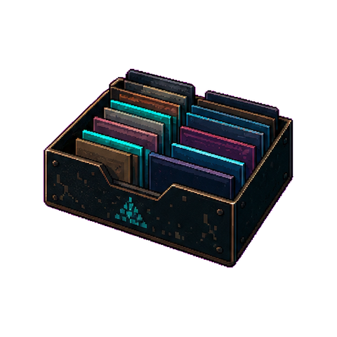

PLAYER 01PROFILE LOADOUT
PLAYER PROFILE
Yen Chun Lin
Game & Technical Designer
London-based designer working across game systems, technical art, interface production and 2D game visuals.
EVIDENCE UNLOCKED
London based2 CV versionsUK opportunities

PLAYER FILEProfile + CV